A note on how this was compiled
Every passage below is Sri Babuji speaking about himself: his childhood, his youth, his first touch with Sai Baba, his inner journey, his sadhana years, and how he saw his own role. Nothing here is what others said about him — except where he himself quotes someone. Quotes are verbatim and complete, never trimmed. Where the same fact comes out differently in his own tellings — the well-known sixteen-versus-eighteen question around his awakening — both versions are given exactly as he stated them, and the difference is flagged, not smoothed over.
Two honesties are owed upfront. First, the video transcripts are unedited auto-captions; where a wording is doubtful, it is flagged rather than silently "fixed." Second, the editorial-context facts used here — that he was born in 1954 in Kota, Andhra Pradesh; married at his Master's wish; and moved to Shirdi after his Master's mahasamadhi in 1989 — are drawn from Ram Brown Crowell's Mountain Path biography, republished by Sri Babuji's daughter on lifeofasaiseeker.com as “Daddy in the Mountain Path” on June 26, 2015. They are editorial context, not quotations from Sri Babuji.
1. The love before memory — childhood
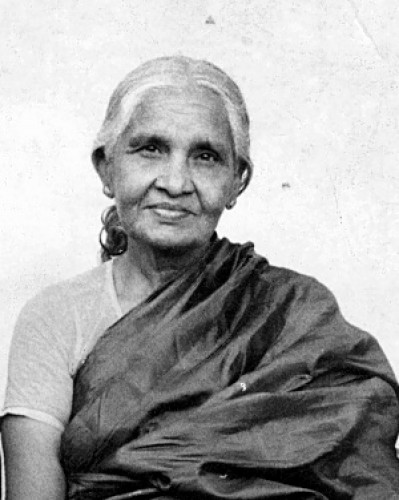
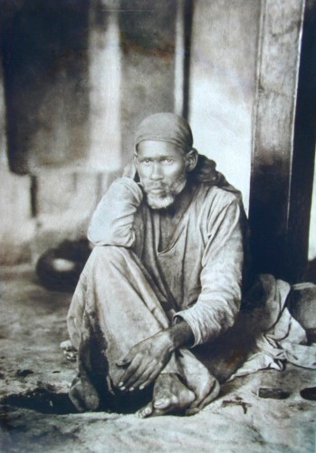
He never claimed to have "come" to Baba at some datable moment. The love, by his own account, predates memory itself.
"My love for Sai Baba seems almost innate," he once remarked. "Already when I was a little boy I had an indescribable attraction for Baba. At my grandmother's house there was a picture of Sai Baba among the many gods and goddesses of the Hindu pantheon. To me Sai Baba looked different from the other deities; he seemed so real, human and tangible; yet, his whole demeanour seemed to emanate an ineffable sense of mystery. He was so familiar, yet so strange. Maybe, it was that 'familiar strangeness' that created the attraction. But I didn't know anything about Baba. It was only later, when I met my Guru, that I came to know who Baba is."
— Babuji, p. 6
Asked to share his first experience of Baba, he told it at greater length — the boy, the shrine room, the grandmother who was a teacher and therefore never said "I don't know":
"My experience was that when I looked at him, even when I was a small boy, somehow I always felt attracted. There was a sense of belonging. That could be called my first experience. I didn't know what Baba was, I didn't know his name – nothing! When I was a boy there was a photo of him in our house and I used to ask my grandmother who he was. All the gods and goddesses had crowns and jewels, some looked human, some had animal faces – there were various kinds – but he looked different from them. He looked so human, like any ordinary person. He was the only one among the whole pantheon that was like that. So I used to ask my grandmother, 'Who is he?' She didn't know anything about Baba, but she was a teacher and she never said, 'I don't know.' [Laughter] Elementary school teachers never say 'I don't know' to children! [Guruji chuckles] They'll give an answer to everything, whatever the question, even about the relativity theory they'll say something! So when I asked, 'Who is that Sai Baba?' she said, 'He's a big Siva bhakta.' 'And what is he doing?' In the picture, there was a small horse and some hills or mountains. I think those paintings can still be seen, if you look in the old houses. 'He lives in the Himalayas and is doing tapas.' 'On whom is he doing tapas?' – because what we knew about tapas was only from the movies. [Guruji laughs] In movies like 'Bhukailash', they used to do tapas on Siva. So, 'On whom is he doing tapas?' 'On Siva!' She used to give answers spontaneously. So, a Siva bhakta living in the Himalayas – that was the picture I had! That's all. My grandmother didn't know anything about him, not even that he had lived in Shirdi. I too didn't know anything about him, but somehow I had a feeling... Whenever I entered the shrine in our house, I used to look at him more and more. Somehow I liked him, he looked so tangible, so human, someone with whom I could easily relate. The other figures looked so strange to me. That was my first experience – and that was also my first knowledge of Baba. It was not because somebody told me about Baba, his greatness, his mahima, that I got attracted to him. Without any knowledge about him, I got attracted."
— Rose Petals, October 2011 ("Guruji's Baba"), p. 1
This untaught, unprompted quality mattered to him all his life. Decades later, speaking about how children should be taught, he returned to it:
"Do not tell them who God is. Nobody told me Sai Baba was God when I was studying. Later, I became a Sai Baba devotee. Let it come like that, by personal choice."
— Rose Petals, August 2013 ("Education – Kindling the Love of Learning"), p. 1
And as a boy he fed the attraction the only way he knew — with a book:
"Vemuri Venkateswara Rao garu — one gentleman wrote a charitra like that; go and read it, it is very great, he wrote it cinematically, it is good, a fine charitra. That's all — I did parayana of it a few hundred times when I was young. It is also beautiful — funny to read, as if a poet wrote it nicely."
— Telugu original: "వేమూరి వెంకటేశ్వరరావు గారు అని చెప్పి ఒకాయన ఒక చరిత్ర రాశడు ఇంకా చదవండి ఇంకా చాలా గొప్పగా ఉంటుంది సినిమాటిక్ గా రాసాడు దాన్ని ఆయన బాగుంది చక్కని చరిత్ర ఇంకేం లేదు నేను కొన్ని వంద సార్లు పారాయణం చేశ చిన్నప్పుడు ఇంకో బ్యూటిఫుల్ గా ఉంటుంది రాయడానికి తమాష ఒక కవి చక్కగా రాసినట్టుగా ఉంటుంది"
— Chennai Q&A, 19 October 2003 (video)
(Editorial context, not his words: Ram Brown Crowell's Mountain Path biography states that he was born in 1954 in Kota, Andhra Pradesh.)
2. The boy who asked why — youth
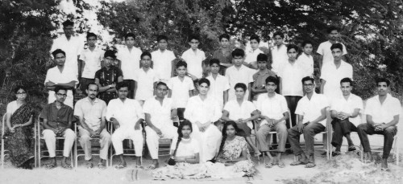
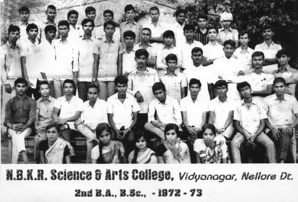
If the love was innate, the anguish was just as early. As a boy he was tormented not by circumstance — "I had no other problems" — but by perception itself: why can I see, why can I hear, what is happening when I breathe?
"There were so many unanswered questions in me. Everything used to be a question, a puzzle, a mystery to me. Everything! Why am I breathing? Why am I able to see this black colour or that white colour? How am I able to talk and to hear? Everything used to present itself as a mystery, it was almost unbearable. Even sleep was a mystery. Why am I sleeping and getting up in the morning? What is happening? It's hard to explain how everything was a problem to me [Guruji laughs]. I almost went crazy trying to understand these things. In those days I read the sastras and I used to question people who claimed they had solved the mysteries of life. But when I met them, my experience was that they had never even thought about these things or experienced them as mysteries. There was nobody who was actually able to answer my questions. They just lectured, using Vedantic jargon."
— Rose Petals, October 2015 ("Guruji's Early Years of Seeking"), p. 1
"When I was young, everything I saw puzzled me and I used to think, 'What is actually happening here – when I breathe, when I think, when I look at something. Why am I able to see and what am I actually seeing? Is what I see the way it really is? If someone is talking, how am I able to hear?' All these things deeply troubled me, sometimes so much it even made me cry. It was a very personal problem for me. You may laugh and think, 'Such a simple thing, isn't it obvious, why would anyone cry?' Yes, I used to cry! I couldn't enjoy anything and everything was tasteless because I couldn't understand. Maybe I can't describe this state well now, but I know it was a problem for me. I had no other problems, and I had no fascination for sastras, scriptures, gods, goddesses, tradition, nothing! I was only preoccupied with this one personal problem. Then I used to think everybody must know these things because no one seemed to feel the same as me. I thought, 'Maybe they all have solved the mystery and I am the only ignorant, stupid fool, surrounded by jnanis, because if they don't have the jnana, why isn't it a personal problem for them?' [Guruji laughs] What I'm speaking about happened when I was a boy."
— Rose Petals, September 2015 ("A Sense of Mystery"), p. 2
The same anguish, told in a satsang years later, in rougher spoken words:
"when I was young ... It troubled me actually so troubled me I used to cry. It's a personal problem to me. It may be you may laugh at it. You may laugh at me now. Such a simple thing you could understand. He was crying. Yes, I used to cry. I can't enjoy everything was tasteless because I can't understand it."
— SaiSEEkers evening satsang, 29 August 2026 (video) (unedited auto-captions; some words garbled — see flagged doubts)
The scriptures did not satisfy him, and he said exactly why — in the famous "operation success, patient died" passage, which he dates to his mid-teens:
"It felt like — 'operation successful, patient died.' I have dukha, I have suffering, so I try for mukti. I try, I do tapas, I do all the spiritual endeavors. The moment I get mukti — 'your mind will not be there! Your mind will dissolve!' Then what do you get? What guarantee is there that you got a solution to the problem of your mind, when that mind is not the one experiencing that bliss? Because the moment you get that experience, that mind is not there — amanaska. So, operation successful, but this patient died, and that too as soon as the treatment started! I don't want such a thing — I used to think like that. Then I was almost a sixteen, seventeen-year-old boy."
— Tiruvannamalai satsang, 16 November 2004 (video) (from the published English–Telugu transcription of this satsang)
His stance as a seeker was fixed early — experience first, belief never:
"You think that reason and belief are opposed to each other and that someone who is spiritual must have belief. But I don't believe in belief at all. I don't give any importance to belief, or trust and all these things. I never believed in anything in order to gain something spiritually. I never tried to follow a belief; it is something I don't like. I had a sense of benefit, of gain, that was my experience. Where is the question of belief before a direct experience? Believe only to the extent of your experience."
— Rose Petals, September 2013 ("On Belief"), p. 3
The outer life of those years was ordinary and vivid: "Before that I was a wrestling champion in my school. [Laughter] Wrestling was my favourite sport." (Rose Petals, October 2015, p. 5); "Earlier, I had been active in college politics, drama and literature." (same, p. 6). And it was poor — deliberately, fiercely independent:
"If you can manage it, do — I did it. I was like that: until graduation I almost got by on scholarships alone. After that, when I did post-graduation, the only thing I asked of my parents was 78 rupees — for the exemption fee. That alone is what I depended on them for. After that I went to Tirupati; I found my own job, I completed it. I am living my own life — to this day I am living my own life. I am independent."
— Telugu original: "ఉండగలిగితే ఉండండి నేను చేశాను నేను అట్లాగే ఉన్నాను గ్రాడ్యుయేషన్ వరకు ఆల్మోస్ట్ నాకు స్కాలర్షిప్స్ తోనే గడిచింది ఆ తర్వాత నేను పోస్ట్ చేసి చేసేటప్పుడు నా పేరెంట్స్ దగ్గర నుంచి నేను అడిగింది 78 రూపాయలు ఏది ఎక్సెంప్షన్ ఫీస్ కట్టేదానికి అదొక్కటే నేను ఆధారపడ్డాను ఆ తర్వాత నేను తిరుపతి వెళ్ళాను నా ఉద్యోగం నేను చూసుకున్నాను కంప్లీట్ చేసుకున్నాను నా బ్రతుకు నేను బ్రతుకుతున్నాను ఈ రోజుకి నా బతుకు నేను బతుకుతున్నాను నేను ఇండిపెండెంట్"
— New Year satsang, 1 January 2025 (video)
"Through all of graduation — in Intermediate I had one pen; till '75, after graduation, I used that same single pen, I knew no other pen. I used to wear my uncle's clothes after altering them; I never asked for clothes. I got a bicycle — it came in a lottery. When that bicycle got a puncture, would I ask for puncture money? Rather than that I'd just walk — I'd leave half an hour early for college, three to four kilometers, I'd just walk. My slippers wore out — I never said 'my slippers are gone, I need slippers'; they'd see for themselves 'he has no slippers'... even with blisters forming I'd just go like that. That's all — one must not ask."
— Telugu original: "గ్రాడ్యుయేషన్ అంతా ఇంటర్మీడియట్ లో ఒక పెన్ ఉండేదయ్యా గ్రాడ్యుయేషన్ అయిపోయి 75 దాకా అదే ఒక్క పెన్ వాడే నేను ఇంకో పెన్ నాకు తెలియదు మా మామ డ్రెస్సులు ఆల్టర్ చేసుకొని వేసుకున్నాడు డ్రెస్సులు అడిగేవాడిని కాదు సైకిల్ ఒకటి వచ్చింది లాటరీలో వచ్చింది సైకిల్ ఒకటి ఆ సైకిల్ పంచర్ పడితే పంచర్ కి డబ్బులు అడిగేవాడిని కదా అంచనబడితే నడిచి వెళ్ళిపోయేవాడిని అంతే ఒక అరగంట ముందు పోయింది కాలేజీ కి మూడు మూడు నాలుగు కిలోమీటర్లు అడవాలి వెళ్ళిపోయేవాడిని అది చెప్పులు దిగి చెప్పులు పోతే నాకు చెప్పులు పోయినాయి నాకు చెప్పులు కావాలి ఈ రోజు అడగలేదు నేను వాళ్లే చూసి చెప్పులు లేవే అని చెప్పి చెప్పులు బొబ్బలు ఎక్కిపోతున్నా సరే అట్లాగే వెళ్ళిపోయేవాడిని అంతే అడగకూడదు"
— New Year satsang, 1 January 2025 (video)
He was also, by his own telling, searching restlessly through pleasures and signposts:
"Yes. I used to feel I lacked something, that something was missing. I had a sense of dissatisfaction, of frustration. I saw people trying to get happiness in different ways and they appeared to be fufilled. So, I too explored: is it this pleasure, is it that pleasure? But it definitely was none of those ways for me. There were different signposts. Sometimes it became clear what I was seeking and then suddenly I realized it was not clear and I was confused again. Then the search would start again and it seemed, 'Oh, now I know it, it's very clear!' And then, after some time, again there was no clarity. So you fail and then try again, fail and try again ..."
— Rose Petals, October 2015 ("Guruji's Early Years of Seeking"), p. 1
3. Meeting the Master — the first touch
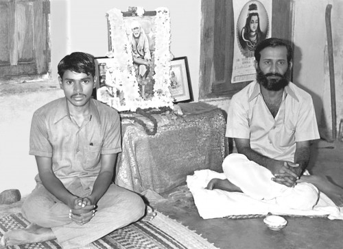
In college he met the man who would become his guru — Acharya Ekkirala Bharadwaja (1938–1989), head of the Department of English, an ardent Sai devotee. His identity and dates are given in Ram Brown Crowell's Mountain Path biography. The meeting came through a chain of small human accidents that he always treated as Baba's arrangement:
"At college I was very closely associated with a professor, my English lecturer; he was like a guru – though not a spiritual guru – and I was almost like his pet. He didn't have any devotion or spiritual tinge at all, but he belonged to the same department as Bharadwaja Master. Master was head of the Department of English. I started sitting every day with Bharadwaja Master, as I had been sitting with the English lecturer, though that had been mostly about English. During that period, the English lecturer was transferred. Before he left he saw a picture of Baba in a shop, and because Bharadwaja Master was a Sai devotee, he bought it and presented it to him. About a week or ten days later, Master presented it to me. I had the picture with me when I went to say goodbye to the English lecturer. 'Oh, that is the picture I presented to Bharadwaja! Has he given it to you?' he said. So it was almost like Baba handing me over to Master. It was so symbolic to me. I took the picture home with me. There was already a small picture of Baba in my house, but this was a big one. When I got home that night and wanted to install it, to my amazement, the other Baba photo had gone! The frame was there, but there was no Baba picture: the frame was empty! What happened was – rats! [Guruji laughs] It was an old photo. A rat had taken the photo from the frame and eaten it. Later we found some of the pieces in a corner. It happened on exactly the same day. In the morning that photo was there, and when I got back to Kota at about 1 or 2 that night and went to the puja room – shock! (Laughter) Everybody in the house was shocked. 'What happened? What happened?' Yes, it was definitely inauspicious – that was Baba's picture! But Baba was already there – the new big picture. So I moved all the other pictures to one side – because like in any normal Hindu household there were many – and then placed the big Baba picture there. I used to sit in that room just looking at Baba. I did not know any sadhanas. I did not know about Baba. I hadn't read his biography. I did not know he was a Satguru and was going to help me, or that he had powers. I knew nothing. But when I sat in front of him, that feeling of being intensely troubled, like having a severe migraine, lifted. So I needed to sit more, more, more. The moment that I went away, it started again. So I used to sit for hours and hours – not as a sadhana, not that somebody had told me to do it, but out of need, that is what I am saying, out of my own migraine headache. By 'migraine headache' I don't mean a physical headache; I didn't have any headaches at all. It was a different matter, a kind of internal migraine."
— Rose Petals, October 2011 ("Guruji's Baba"), p. 2
He debated with his Master — until the Master stopped the debates and handed him a book:
"when i started putting all these questions and started discussing with my master then the first thing he did was no no now we'll stop discussing just read this book and then he gave the self-realization by being awesome of that was the first life of a saint i read then ramla looked even more human more tangible even given babashi means somewhat the material somewhat beyond our reach but rav seemed very tangible very reasonable so i could easily connect it so if he can get it why can't i get it"
— Tiruvannamalai satsang, 16 November 2004 (video) (unedited auto-captions; "self-realization by being awesome of" is a mishearing of B.V. Narasimhaswami's "Self-Realization: Life and Teachings of Sri Ramana Maharshi"; "ramla"/"rav" = Ramana — see flagged doubts)
What the Master gave him, he always insisted, was not a path but the knowledge of how to make one:
"it's not a it's not a path which I followed. I came to know how to make a path because there was no path there in front of me. It's all bushes, soil, palms, grass, trees. So I have to make a way."
— SaiSEEkers evening satsang, 29 August 2026 (video) (unedited auto-captions)
And in cleaner written words:
"When I met my guru, I found a way to relate to my problem and tackle it. Then I followed that path. Actually, it's not that I followed a path – I came to know how to make a path. There was no path there in front of me, it was all bushes, thorns, grass and trees. So I had to make a path to go beyond that."
— Rose Petals, September 2015 ("A Sense of Mystery"), p. 2
He never confused the living guru with Baba — and never separated them either:
"He is! He was of incredible calibre! He was a great man. He is my guru, and I am proud of it! Yes, he is my guru. He was my guru, he is my guru, he will be my guru! I don't feel like there's a difference. It was Sai Baba who came in his form and then taught me what was needed."
— Rose Petals, October 2015 ("Guruji's Early Years of Seeking"), p. 2
"I think of Baba as my guru, but back then I needed a concrete expression of it and I saw it in Master. He was the one who inspired me, who triggered the love of Baba in me. I felt moved to follow him, like a blind man. I didn't know the path, I was like a blind man. I wasn't questioning his instructions, asking, 'Why? How?' None of these things. I found a guru and I followed him, that's all. Who cares about the path? He held out a stick, I grasped the other end of the stick and followed him. That is how I served my guru."
— Rose Petals, October 2015 ("Guruji's Early Years of Seeking"), p. 3–4
And what the guru gave was not technique but glance:
"Normally the sampradaya is this: guru means one who gives mantra-upadesha — that is what 'guru' may mean. He is my guru; he never gave me any mantra-upadesha, mother — with his glance alone, with his thought alone, he uplifts the questioner."
— Telugu original: "మామూలుగా సాంప్రదాయం ఏమిటంటే గురువు అంటే మంత్రోపదేశం చేసేటువంటి వాడు గురువు అని అర్థం కావచ్చి ఆయన నా గురువు నాకేం మంత్రోపదేశం చేయలేదమ్మా దృష్టితోనే ఆలోచనతోనే ప్రశ్న ఉద్ధరిస్తాడు"
— Tiruvannamalai satsang, 29 May 2003 (video)
His first recognition of Baba himself needed no reasons at all — "a familiar stranger":
"just as I told you in my own case of Baba I do not know anything not any reasons not that he gave very good lectures and he's a scholar actually in those days when I was young and unless you have been a scholar like that I have not been attracted but nothing something that you feel that a sense of security a sense of happiness and your mind is automatically goes towards him again and again the best word that I could get how the first place that we can relate to our Guru is a familiar stranger we do not know anything about him but he's so familiar we know him so much so intimate he is but at the same time it looks so an enigma we not anything about that strangeness is something makes us a mystery and attracts it is familiar it is strange it is strangely familiar it is familiarly strange"
— "Sadguru — A Familiar Stranger," October 2024 (video) (unedited auto-captions)
"Something was there which I did not know: love for something. My mind was struggling for something. When I saw Baba I realized, 'Oh, this is the one I have been searching for.' It was the beginning."
— Rose Petals, October 2011 ("Guruji's Baba"), p. 3
Asked once what his security was, he answered in a single word: "Baba!" — "Baba meets all his needs, 'more than security... almost a kind of a wish-fulfilling tree.'" (Rose Petals, October 2011, p. 3)
4. The inner turning — awakening
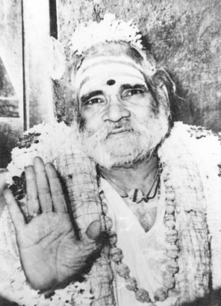
Here the sources require honesty rather than harmony. He spoke of the turning more than once, and not in identical terms.
In his spoken satsangs, he dates his youthful philosophical awakening — the "operation success, patient died" rejection of Vedantic answers — to "about 16 17 years old" (Tiruvannamalai, 16 November 2004; video).
In his written words, describing the afternoon when gazing at Baba's photo beside his Master dissolved his inner restlessness, he says:
"One day when I was sitting and talking with him, I kept looking at Baba's photo which was there beside him. I was talking to Master but I kept looking at the photo. Then something happened! A kind of restlessness was relieved. For instance, how would you feel if a strong migraine you've had continuously for three or four months, suddenly left you? It felt like that. I can't explain it better than that. I don't know what happened, but I thought my relief must be because of Baba's picture so I wanted to gaze at him more and more. I didn't know anything about Baba at that time, but something was so attractive about him, that even while talking and arguing with Master, my mind was on Baba. My mind was becoming more and more empty. It was as if someone else was arguing, while my mind, my complete attention, was on Baba and I was observing the whole dialogue. Nearly eighteen years old. And after that something changed in me, something was relieved, the 'migraine' was gone. Whenever I felt a slight disturbance, I felt like going back to Master's room again. Whether I was going for Master or for Baba's photo I do not know."
— Rose Petals, October 2015 ("Guruji's Early Years of Seeking"), p. 3
And in the same corpus: "In 1971, when I first met my Master" (Rose Petals, May 2012, "Niyama", p. 2) — consistent with an October 1954 birth and a turning at nearly eighteen. The word "sixteen" does not occur anywhere in the sixty Rose Petals editions.
The discrepancy, stated plainly: the figure "18" for a "transforming mystic experience" also appears in third-party narration — the 2007 Fire of Love DVD introduction and a 2020 documentary — but in none of his own words found in this compilation. His own statements give "about 16 17" (spoken, of his philosophical awakening) and "nearly eighteen" (written, of the photo-gazing relief). These may describe the same period seen from different angles, or two moments; he never reconciled them, and neither do we.
Then came Poondi. In 1974, barely twenty, on nothing but his Master's word, he went to the avadhuta Sri Poondi Swami — and the seeking ended:
"I went to Poondi Swami because Master asked me to go. He asked me and I went, that's all, there was no other reason. I attributed it all to Baba. It was Baba who sent me there, and it was his duty to give me whatever it was. And it so happened that it [Guruji's realization] came through Poondi Swami's form and in that place, so I have an attachment there. But I think it was all due to Baba's grace."
— Rose Petals, October 2015 ("Guruji's Early Years of Seeking"), p. 4
"Nothing: it is not your choice. In fact, it was not my choice to go to Poondi. And then, I didn't expect it even – that he was such a great man. I had absolutely no notion of him; I was not even interested. Simply, I had to start my journey and my guru asked me, 'Go, and stay there for some time, and then go anywhere you like.' That's all. I didn't have any idea what Poondi Swami would be like."
— Rose Petals, September 2012 ("Sri Poondi Swami"), p. 3
"Nothing. What happened can't be expressed verbally. In Poondi, the thing that was missing I got, and my seeking ended. Not that something happened. What happened was this and it was enough. My problem was solved and since then there has been no more seeking. The struggle was over, that sense of lack and frustration was no longer there. I think that is enough description. [Laughter]"
— Rose Petals, October 2015 ("Guruji's Early Years of Seeking"), p. 6
"Yes, Sai Baba was my Guru. He didn't say anything. But in his presence I experienced something which transformed my whole life. It was answered. Yes, I am experiencing it. I am experiencing it continuously. In fact, I don't have any words for that experience. I haven't found any words in all the sastras. These things we shouldn't try to question or understand. There are certain things which have no words and can only be interpreted."
— Rose Petals, September 2012 ("Sri Poondi Swami"), p. 2
"And he was so transparent that through him I saw Sai Baba only. That is why I always say that it is Sai Baba who gave the experience. His personality was not a veil, even to see that there was a Poondi Swami between me and Sai Baba. And I haven't seen such transparency anywhere else."
— Rose Petals, September 2012 ("Sri Poondi Swami"), p. 4
Asked once what influence Sri Ramana Maharshi, Sri Poondi Swami, and Sri Sai Baba had each had in his life, he answered in a single line:
"Maharshi made me see the vessel of my being, Poondi Swami emptied it clean, and Baba filled it."
— Babuji, p. 7
His daughter later preserved the same summary in this wording:
"Ramana showed me the vessel [of my being], Poondi Swami emptied it, and Sai Baba filled it."
— Ram Brown Crowell, Mountain Path, republished by Sruti Sainathuni in “Daddy in the Mountain Path”, June 26, 2015
5. The austere years — sadhana
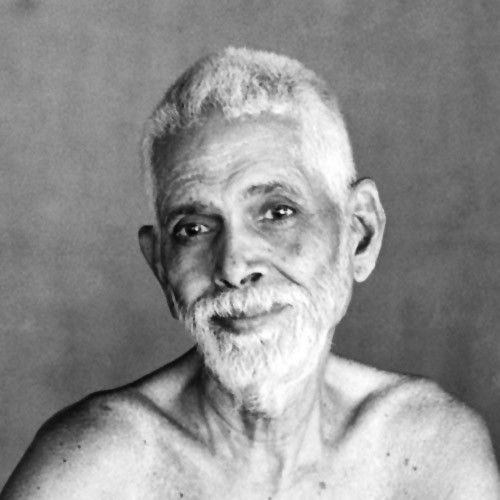
The seeking had ended, but the discipline did not. Around 1972 to 1978 or 1979 — the years he himself dates — he lived with an intensity that alarmed everyone around him:
"It was around 1972 to almost '78 or '79. People thought I had gone crazy. Earlier, I had been active in college politics, drama and literature. People said, 'Such a nice boy, and see now what has become of him!' [Laughter]"
— Rose Petals, October 2015 ("Guruji's Early Years of Seeking"), p. 6
"Later, when I became connected to Baba, I started doing all sorts of sadhanas, very strenuous sadhanas. To me, doing sadhana, for instance, calling Baba's name, meant doing it for 24 hours, even while sleeping it had to continue. Because I was attending college, I couldn't completely devote my time to it, but if there was a holiday, then I would spend the whole day sitting in meditation, not even moving, trying to find out about a particular practice. I did it completely to see whether it solved my problem. I might have had different kinds of experiences, but they were not satisfying to me. During that period I never went to see a movie, I didn't even look at a movie poster! [Guruji laughs] I was that strict! I didn't wear any chappals [sandals] and even in winter I used to get up at three o'clock and take a cold bath. To make the water still colder, I would fill an earthen pot before going to bed and keep it outside."
— Rose Petals, October 2015 ("Guruji's Early Years of Seeking"), p. 5
"Simply, I felt it like that. The scriptures say that vairagya is needed in spiritual life. They say you have to conquer attachment to physical comfort. So I thought, 'Let me do this completely, go to the extreme and see what will happen.' I was purposefully seeking and courting trouble, almost torturing the body. Nothing happened! [Guruji laughs] The only thing that happened was that since then, whether I have comfort or not, it's okay for me. I was so strict, I never looked at the cover page of a weekly magazine, even if it was lying right in front of me, I would intentionally avoid looking at it. My father used to visit his friend who was the owner of a local cinema theatre and they would sit there and spend time together. If I needed to tell my father something, I had to go to the theatre – but I shouldn't enter the theatre! So I used to stand outside and ask the watchman to send for him. And all the people used to joke and say to my father, 'Look, the bhakta has come! Go, go out! If he comes inside, he'll become impure and be spoiled!' [Laughter]"
— Rose Petals, October 2015 ("Guruji's Early Years of Seeking"), p. 5
"Before going to Poondi, and after going to Poondi this state continued for some time. I could live with a bare minimum and didn't worry about anything. I lived like that in Tiruvannamalai, without having a rupee in my pocket, not carrying even a bag or a backpack. Living like that gave me such confidence, that even without all these things I could live happily. And maybe those practices also gave me something else."
— Rose Petals, October 2015 ("Guruji's Early Years of Seeking"), p. 6
His retrospective verdict on all of it is characteristically deflating — the austerities were stones that taught him to throw, not the goal:
"Yes, definitely. But I'm not saying the practices were necessary. As I've said before, they might have been one of the stones that helped me hit the mango on the tenth try, by helping me learn the art of throwing. I did all these things, mantra, tantra, japa, and all kinds of meditative techniques, but I found something else. That is why I don't prescribe these practices to you, in the same manner, because I found another way to easily achieve the same goal. But, if you want to do all that, good, do it! No problem. [Guruji laughs]"
— Rose Petals, October 2015 ("Guruji's Early Years of Seeking"), p. 6
"For a period of time, after I came to my Master, I also explored different techniques of meditation and all these things – almost the whole gamut of spiritual practices. But the fulfilment I got had nothing to do with all the things I had done. Maybe they all added up to that experience, perhaps they were like the tenth stone in the mango tree story. But, when I explored all those techniques, my need was to solve a personal problem, not because they were sadhanas prescribed by the scriptures, nothing like that. It was an urgent problem for me and I just had to find some way through it, one way or another."
— Rose Petals, May 2014 ("Effort from the Heart"), p. 3
Running alongside the austerity was something quieter and longer: obedience. In 1971 his Master put him in charge of the Thursday satsang, and for six years he did not miss once:
"In 1971, when I first met my Master, he said, 'Take charge of the satsang!' It meant just arranging the room and Baba's photos. They were in the cupboard, and needed to be taken out and garlanded; that was the simple satsang. He said, 'You be the in-charge.' I did it every Thursday for six years, except those days which I spent in Poondi. That is a niyama: I didn't miss doing it, not even once. If floods were expected, I used to go earlier, at five o'clock, and take a raft and then reach Vidyanagar. If there was a storm or a cyclone and there were no buses, I used to walk. Even if I had 104º, 105º fever, I would go! 'What will happen? I will die, that's all! Will anything more happen? No. Go!' In six years I didn't miss even once. After I moved to Venkatagiri, in the beginning I still used to go every Thursday to Vidyanagar and do the satsang, until Master relieved me of that. He said, 'No, no, you need not come any more. Now do the satsang in Venkatagiri.' So I started in Venkatagiri and continued it there. Not even once I missed."
— Rose Petals, May 2012 ("Niyama"), p. 2
"No. I simply thought, 'My guru has given me a responsibility.' I took it as a blessing and then I did it, that's all. That itself will take me to the goal. Doing anything connected to Baba will definitely take me to the goal. How it takes me, I don't bother about it. That is his botheration, why should I bother about it? If it is not sufficient, that is his fault, it is not my fault. [Laughter] I'll do it, that's all. There was no choice for me in what I had to do: I had to focus on Baba, that's all. That is what I had to do. When you have to do something there is no choice. I didn't have any choice – I had to do it."
— Rose Petals, May 2012 ("Niyama"), p. 3
"I don't know whether it shows maturity or stupidity! I followed the principle. It's not the person there, it is the principle."
— Rose Petals, October 2015 ("Guruji's Early Years of Seeking")
The obedience extended past comfort into life decisions. "Even when he asked me to marry, I did it without a word," he said of his Master (November 2025 extract, video):
"many things when I was with my guru which actually I I didn't like it he also knew it that I don't any time anyway connected to these things sometimes he asked me to go this go there go do this and do that and do this I did it including my marriage that's when it comes there is no question of our likes and dislikes simply because I love him not that he's my guru or uh he has I have to follow the instructions whether I like it or not nothing as I told you that my relationship was not like that I loved him so much and he loved me so much simply asked and I did"
— "In love, likes and dislikes wither away," November 2025 (video) (unedited auto-captions)
(Editorial context, not his words: he married Anasuya in 1982; their daughter Sruti was born in 1987. He took an M.A. in Sociology, worked as an English lecturer, ran a school in Ongole — where he wrote the school prayer himself, "not even the name of Baba" in it (Rose Petals, August 2013, p. 1) — and lived from the school's honorarium. He first visited Shirdi in 1977: "I didn't read about Baba's life for a long time and I went to Shirdi only in 1977." — Rose Petals, October 2011, p. 2.)
The Ongole school years gave him one of his most characteristic lines. His manager had taken out life-insurance policies in his name; when he saw the papers, he tore them up:
"I was running the school in Ongole. My manager… made an insurance… complete policies in my name. When I saw the papers… I tore [them]. …Baba — my life is insured in the Sai Insurance Corporation."
— Telugu/English as spoken, satsang on "sense of security" (video) (auto-captions render his English in Telugu script, heavily garbled in places — see flagged doubts; the file's own summary confirms the "Sai Insurance Corporation" line)
6. Shirdi, and the work that is not a mission
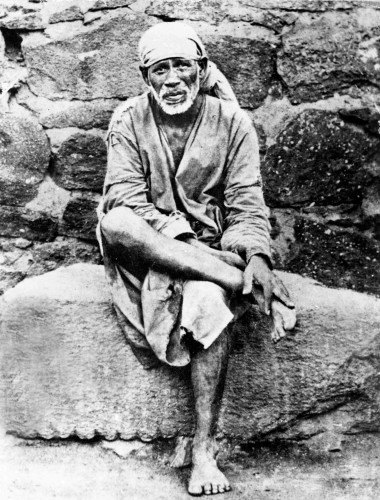
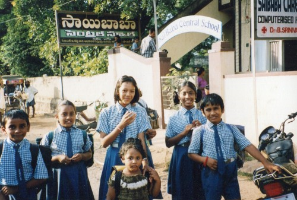
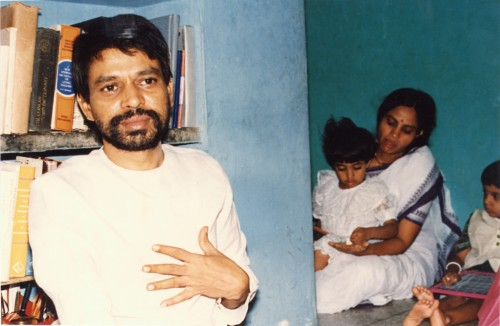
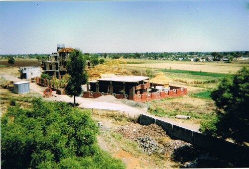
After his guru's mahasamadhi in 1989 he settled in Shirdi — but "settling" never meant building. In 1988 he had started Saipatham, the Telugu magazine of research into Sai Baba's life and teachings; the Shirdi satsang compound took the same name. The name question came up again in 1986, when an organization needed naming, and his answer revealed his hierarchy of loves:
"it's not that I named any organization disciple if they wanted the name for the magazine I named it cyber them that's all and then slowly Disciples of cyber them started uh screen too all the other things also actually is the name of the magazine no other thing that was the name I gave to the magazine why I gave the name because this is means that I don't call what I do what is around me is cyberlain there should be some name to refer that is why people are referring to Cyprus there is no harm in it good very good I would have preferred only simple Sai Baba that is my first option always because to me he is the path he is the goal but the problem is I have already given the name to another magazine that magazine is there running I started that magazine when I was with my Guru their Max's name is Sai Baba simple Sai Baba I put the name when an organization name came I didn't give it a disciples on Foundation a Cyprus on society or anything Sai Baba Foundation there is no compromise with that name that is the name because the Sai Baba name is already taken is resisted so there was a necessity to seek for another name then cyber them came to my mind"
— Tiruvannamalai anniversary satsang, April 2023 (video) (unedited auto-captions garble "Sai Them" as "cyber them"/"Cyprus" — the transcript's own summary confirms the 1986 magazine was named "Sai Them"; see flagged doubts)
He never gave lectures. He met people in small groups and answered questions, in Telugu or English, "in words and in silence" — some 140 English satsangs between 1993 and 2010, which became the monthly Rose Petals. And he was explicit that the satsang was not an instrument for anything:
"The real transformation which happens in your heart is not due to what I say in satsang… Satsang is just a pretext to spend some time together and share our love for Baba."
— as given in the "Who is Sri Babuji?" digest (no separate citation)
"I will tell you not how to do it, but how NOT to do it. Sadhana is not for fattening the ego within us; not for telling others and making ten people into Baba's [devotees] and growing our organization — not for that, not we, not Baba's publicity. Take it only as part of the Baba-smarana that is in us."
— Telugu original: "నేను ఏమి ఎట్లా చేసుకోవాలి అనేదానికి ఎట్లా చేసుకోకూడదో చెప్తాను మనలో ఉండే అహాన్ని పెంచుకునేదానికి సాధన కాదు ఎదుటి వాళ్ళకి పక్కన వాళ్ళకి చెప్పి 10 మందిని బాబా తయారు చేసి మన సంఘాన్ని పెంచుకునే దాని కోసంగా తయారు చేం మనం కాదు మన బాబా ప్రచారం కాదు చేశడు మనం మనకు ఉండేటువంటి బాబా స్మరణలో భాగంగా మాత్రమే తీసుకో"
— on "how should satsang be done" (video)
Most sharply, he refused to let anyone — including himself — turn the work into a "Mission," quoting Baba's own words to him:
"No — no one can convert anyone into a Sai devotee. After Baba said 'I Myself choose My devotee,' who can convert whom? If anyone does change, you have merely become a mission in Baba's hands, that's all. Baba said, 'I keep escaping from so many missions coming to Me.' You have become a mission, that's all — just because you became a mission, don't go making a mission of the mission."
— Telugu original: "కాదు ఎవరు ఎవరిని సాయి భక్తుల కింద మార్చలేరు మా భక్తుడిని నేనే ఎన్నుకుంటాను అని బాబా చెప్పిన తర్వాత ఎవరు ఎవరిని మార్చగలరు ఒకవేళ ఎవరైనా మారితే బాబా చేతిలో నువ్వు ఒక మిషన్ అయ్యావు అంతే బాబా అన్నాడు ఎన్నో మిషన్లతో నా దగ్గరికి తప్పించుకుంటున్నాను అన్నాడు నువ్వు ఒక మిషన్ అయ్యావు అంతే అంత మాత్రం చేత నేనే మిషన్ అయినాను గనుక నేనే మిషన్ ని అని మిషన్ కాస్త మిషన్ చేయబాకండి..."
— "No one can convert anyone into a Sai devotee" (video)
The material rules were absolute — aparigraha, non-acceptance, lived, not preached:
"There is no clash between my material and spiritual life. There is nothing that even the richest or the poorest man can give to me. It is my principle that I should not accept anything and I don't care whether he is rich or not. I don't have the necessity to get anyone's favour because I am not dependent on anybody except Baba. I stay in my house and people come. Sai Baba devotees come – what can I give them? I give them Baba's udi. They like to have Baba's udi, and I don't have any objection in giving Baba's udi and to praying for them. That's all I do, and I try to see Baba in them."
— Rose Petals, May 2013 ("Udi – Symbol of Baba's Grace"), p. 3
"Donations in any form are not accepted." — "Baba himself lived for more than fifty years in Shirdi and what institutions did he found?"
— as given in the "Who is Sri Babuji?" digest (no separate citations)
7. How he saw himself
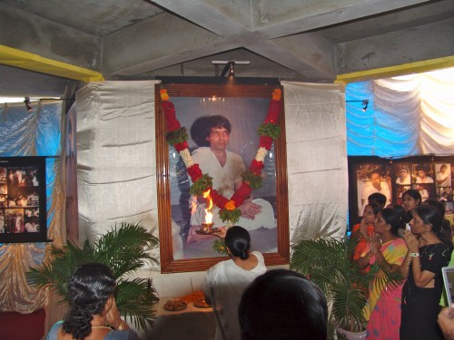
Everything above converges on the question he spent his life deflecting: who are you, then? His answers form the most consistent thread in the whole compilation.
"I am not your guru, you are not my disciples. I am a simple Sai devotee."
— his own self-description, as given in the "Who is Sri Babuji?" digest
"Have I called you? Have I invited you? Have I promised you anything?… I am not a teacher! I am not a guru! I am not a saint! … I am just like you… I am a simple Sai devotee. Yes, I am."
— Bound to Love, as quoted in the digest
"For a long time I've had a nostalgic feeling for Tiruvannamalai, so I decided to come here and spend some time. Then you people came, so there was a sharing, that's all. I don't think I'm teaching you. I haven't advertised in any newspapers, or sent invitations for people to come and listen to my discourses. It's a human instinct to share, and what I am doing is just in the way of that human instinct. People unnecessarily call me 'Guruji'. I am not a guru. Why I keep quiet is because they need a guru, and they see a guru in me, so they call me 'Guruji'. It is their need. I don't need disciples, so I don't see them as disciples. Without disciples can a guru exist? 'Guru' is a relative term."
— Rose Petals, December 2015 ("Guru and Disciple")
His positive self-image, definitively, was the spoon:
"Just like the role I am playing with you – the role of a spoon. You take soup with a spoon: but who made the soup? Who gave you the soup? And what is the soup? The spoon is only a means. And you should know how to handle the spoon properly. If you think it's the spoon that is giving and then try to bite it, you'll lose your teeth – that's all! [Guruji smiles]. That is why I always say, I don't do anything to you; use me only as a spoon. I am a spoon, use me properly. Who gives is Baba."
— Rose Petals, September 2012 ("Sri Poondi Swami"), p. 4
The same refusal, in other lights:
"I don't come to the satsang hall to give darshan, I come to receive darshan. Who am I to give darshan to anyone? It is the exalted state of Sri Sai Baba that pulls us all to have his darshan with love and devotion."
— Babuji, p. 17
"I teach nothing, I try to make you learn," he said, when asked about his teaching.
— Babuji, p. 28
His daughter remembered the same point in its more direct form:
"I don't teach you. I make you learn."
— Sruti Sainathuni, “The Joy of Impermanence”, March 7, 2015
And the learning had to remain answerable to one's own experience and meaning:
"Always believe in your experience... Even if I say it, don't believe me!"
— remembered by Sruti Sainathuni in “Meaningful Worship”, May 29, 2015
"Do what is meaningful to you"
— remembered by Sruti Sainathuni in “Meaningful Worship”, May 29, 2015
"In this, don't take me as an ideal — I am not a model."
— Telugu original: "దీంట్లో నన్ను ఆదర్శంగా తీసుకోబాట్లేదు ఐ యామ్ నాట్ ఏ మోడల్"
— his 70th-birthday celebrations (video) (caption mishearing flagged — likely "తీసుకోవద్దు/తీసుకోకండి")
And when people prostrated to him anyway, he had a whole philosophy for it — the namaskars were never really for him:
"I don't feel anything! I don't even think that it is to me that they do namaskar (prostrate). Everyone has his own abstract sense of fulfilment, and constantly seeks to make it concrete. ... You asked what I feel when people do namaskar. Yes, if at all I feel anything, I feel that those namaskars are offered not to me but to Sai Baba, because Sai Baba is the concrete image of my own sense of fulfilment and perfection. Besides, most people need to seek a guru who triggers and epitomizes their abstract sense of fulfilment. So, it is their need for a guru that makes some see a guru in me and treat me as such. But for myself I don't need devotees or disciples; so I don't see them as such."
— Babuji, pp. 18–19 (in reply to Roger Housden, Bodh Gaya)
Those who came to him, he said, came as Baba's prasad — and all he had to give them was sharing:
"I don't call anybody, but I don't refuse anybody. Why? Because Baba himself said, 'Whoever comes to you, remember that I have sent them. They have come to you because of the karmic relations that you have with them.' So because of past karmic relations we are all sitting here like this. And I treat you as Baba's prasad. I want to respect you. I have to do all that I can. What I can do? I can only share. That is what I am doing. It is all an expression of my love towards Sai Baba."
— Rose Petals, October 2011 ("Guruji's Baba"), p. 4
"If you get something, some happiness, you share it with others. I saw a treasure in Sai Baba. I experienced something."
— Rose Petals, September 2012, as given in the digest
"It's like when you have a young child," Sri Babuji explains, "and others show their joy in the child – your happiness is increased. Like this, the more people that come to love Baba, the more joy I feel."
— Babuji, p. 21
"If I sit with ten Sai devotees, that is puja to me. Devotees — if I forget, the one beside me reminds me. One must sit with everyone and do Baba-smarana."
— Telugu original: "10 మంది సాయి భక్తులతో కూర్చుంటే నాకు పూజ భక్తులు ఒకవేళ నేను మర్చిపోయినా పక్కన వాడు నాకు జ్ఞాపకం చేస్తాడు అందరితో కూర్చోవాలి బాబా స్మరణ చేసుకోవాలి"
— Guru Purnima Day 1, 2024 (video)
His daughter described the direction of that life in one compact phrase:
"not accumulating punyam, but accumulating happiness"
— Sruti Sainathuni, “Daddy's Contemporary Spirituality”, March 23, 2015
Two images close the self-portrait. The udi on his forehead, worn daily, was not a ritual but a remembrance — the last service to his guru:
"After taking a bath, I put udi on my forehead. ... Putting udi on him was the last service I rendered to my guru. After he passed away and was lying on his deathbed, I came and the last thing I did was to put udi nama on his forehead. Then he was buried, so that was my last act of service to him, it was my last expression of love to him. And whenever I put on udi, I remember him. That was my last service. And that last service has the force of all the services that I have done, in all my fourteen years of staying with him."
— Rose Petals, May 2013 ("Udi – Symbol of Baba's Grace"), p. 3
"The udi is a symbol of Baba's grace; it is the touch of my Beloved."
— Babuji, p. 20
And when asked to sum up his whole teaching in one sentence, the answer was: "the experience and expression of love." (Bound to Love, as given in the digest.) Or shorter still, as he put it: "Baba is both the path and the goal."
8. The closing
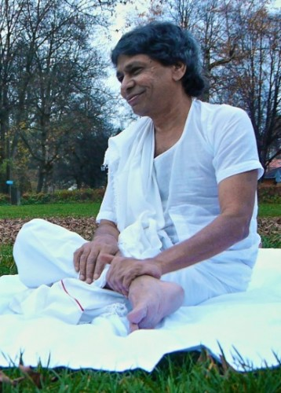
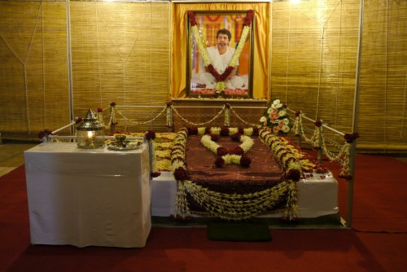
(Editorial context, not his words: he took mahasamadhi on 13 November 2010; his samadhi, the Sannidhanam, is in Saipatham, Shirdi.)
His closing line to those who came — recorded on the digest as simply "His closing" — was:
"No one leaves Shirdi empty-handed."
Flagged doubts — wording the captions may have garbled
These are places where the auto-captions are probably wrong. The biography above uses the most likely reading; the raw caption is noted here so nothing is hidden.
- "my college desk" → "my college days" (Tiruvannamalai, 16 Nov 2004).
- "cyber buddy" → unrecoverable; likely "a Sai Baba devotee/bhakta" (same satsang).
- "self-realization by being awesome of" → B.V. Narasimhaswami's Self-Realization: Life and Teachings of Sri Ramana Maharshi (same satsang).
- "ramla"/"rav" → Ramana (same satsang).
- "that attacked me" → "that attracted me" (same satsang).
- "when I met my goal" → "when I met my guru" (29 Aug 2026 satsang).
- "cyber them"/"cyberlain"/"Cyprus" → "Sai Them" (1986 naming account; the transcript's own summary confirms).
- "the PA" → unclear (Nov 2023 extract, guru-service passage).
- Place names "qu", "V", "onar" → misheard towns on the Kota–Vidyanagar route (same extract; Rose Petals gives Kota and Vidyanagar).
- "యూనివర్సిటీ ఆఫ్ ఇండియా" → "Unit Trust of India" (satsang on "sense of security").
- "తీసుకోబాట్లేదు" → "తీసుకోవద్దు/తీసుకోకండి" (don't take [me as a model]) (70th birthday).
- "పారాయణం చేశ చిన్నప్పుడు" → "పారాయణం చేశాను చిన్నప్పుడు" (Chennai 2003).
- "పోస్ట్ చేసి చేసేటప్పుడు" → "post-graduation చేసేటప్పుడు" (New Year 2025).
- "వేసుకున్నాడు" → "వేసుకునేవాడిని"; "అడవాలి" → "నడవాలి" (same).
- "sa devote"/"saaba" → "Sai devotee"/"Sai Baba" (Fire of Love intro captions).
- "kic relations"/"past congratulations" → "karmic relations"/"past connections" (2011 trailer).
- "75 దాకా" (till '75) — possibly the year 1975; unconfirmed.
- In the boyhood-anguish passage (29 Aug 2026), "posity", "the mist", "liberant", "gamis" are unrecoverable mishearings.
Compilation completed from: 362 English transcripts, 338 Telugu transcripts, Babuji (37 pp.), 60 Rose Petals editions (2011–2015), and the "Who is Sri Babuji?" digest. 100 first-person passages mined; all are cited in sources.md.
Photographs courtesy srisainathunisarathbabuji.com/timeline
For Gurubandhus — Continue with SaiLib
Every video quoted here can be looked up by searching SaiLib. Search 719 satsang videos by keyword, go directly to exact timestamped moments, test your recall with the 502-question quiz, and continue into the digests and book library.
Further reading — “Daddy in the Mountain Path”: Ram Brown Crowell’s full biographical article on Sri Babuji’s life (1954–2010), republished from the Ramana Ashram journal Mountain Path and shared by his daughter Sruti on lifeofasaiseeker.com.